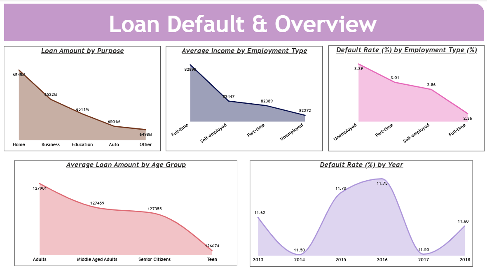
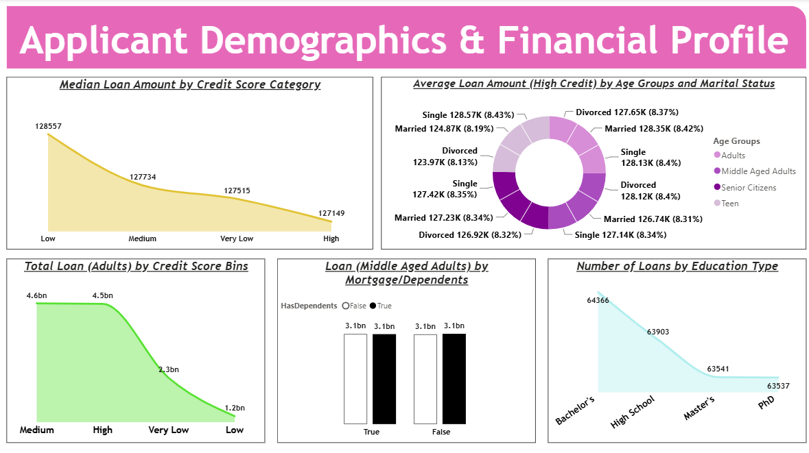
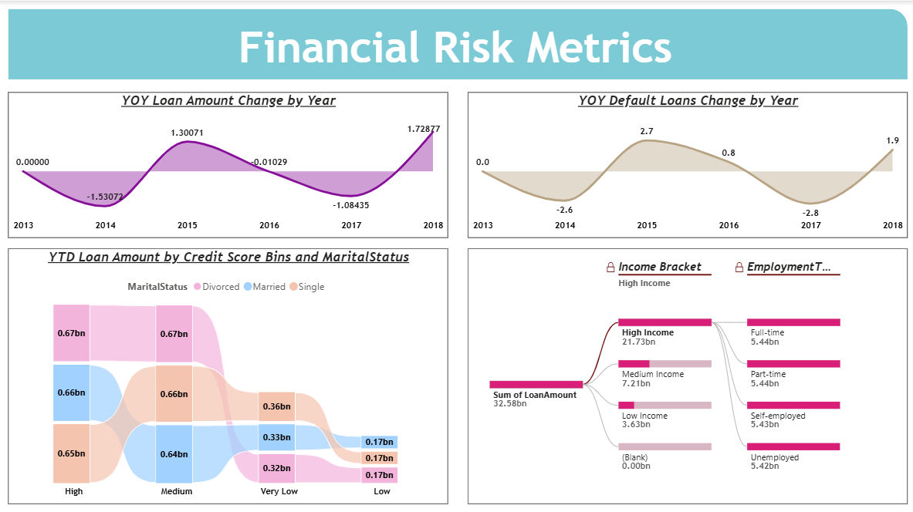

Loan Default &
Financial Risk Analysis
Analyzing loan data to identify patterns in borrower behavior, assess financial risk, and understand factors associated with loan defaults.
THE QUESTION
Problem Statement
Financial institutions manage large amounts of borrower and loan data, but raw records alone do not provide a clear understanding of financial risk. It can be difficult to identify patterns in borrower behavior, understand which factors are associated with loan defaults, and compare risk across different borrower groups. Without analyzing these patterns, important indicators of financial risk can remain hidden within the data. This project focuses on analyzing loan and borrower information to understand default patterns, assess financial risk, and identify the factors that contribute to loan defaults.
INSIDE THE REPORT
Page Features
01
Loan Default & Overview
Provides an overall view of loan activity and financial risk using key performance indicators and visualizations. The page highlights total and average loan amounts, default rate, loan purpose, employment type, and yearly default trends to provide a clear overview of borrower and loan performance.

LOAN DEFAULT & OVERVIEW
02
Applicant Demographics & Financial Profile
Explores borrower characteristics and financial profiles to understand how demographics and financial conditions vary across applicants. The analysis considers age, marital status, education, income, employment type, dependents, mortgage status, and credit score.

APPLICANT DEMOGRAPHICS & FINANCIAL PROFILE
03
Financial Risk Metrics
Focuses on financial risk indicators and patterns associated with loan defaults. The page examines credit-score groups, income levels, loan amounts, default rates, and time-based trends to provide a deeper understanding of financial risk.

FINANCIAL RISK METRICS
METHODOLOGY
Analytical Approach
The project began with understanding the dataset and identifying the key borrower, financial, and loan-related fields required for the analysis. Variables such as age, income, credit score, education, employment type, loan amount, interest rate, loan purpose, marital status, default status, DTI ratio, loan term, months employed, and credit lines were examined to establish the structure of the data.
SQL and Excel were used to organize, explore, and examine the available data. The analysis focused on identifying patterns across borrower groups and comparing financial characteristics associated with loan defaults. Borrowers were segmented using categories such as age, income, and credit score to make comparisons easier and provide a clearer view of financial risk.
The prepared data was then transformed into an interactive Power BI report. DAX measures were created for key metrics including total loan amount, average loan amount, median loan amount, default rate, and time-based calculations such as year-over-year and year-to-date analysis.
Additional calculated categories were created for age groups, income brackets, and credit-score ranges. These categories made it easier to compare default patterns and financial characteristics across different borrower segments and helped turn the raw loan data into a structured financial risk analysis.
THE BUILD
Tools & Technologies
GET IN TOUCH
Let’s Connect
Interested in working together, discussing a project, or simply connecting? I’d love to hear from you!
samiafathima28@gmail.com